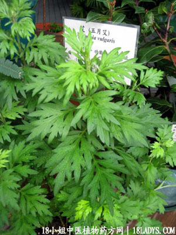

五月艾(中草药名称:艾)(科目:菊科)

别名：细艾，蚊艾。
植物名：艾。
生长环境：本品为多年生草本，荒野，野旁以及空旷的草地上均有生长，能耐旱。
分布：我国长江以难各省均很常见，广东各地皆有。
入药部分：全草。
采集期：全年均有，以五月为佳。
自采地点：荒地、山岗。
性味：性温、味微苦、气芳香。
功能：祛风、消肿、辟蚊（作火把燃熏）。
主治、用量和用法：1、产后风：用干根1至2两，煎取水炖鸡，炖一小时服食，另干用全草4至5两，煎水抹身；2、虚肿风湿脚气：用法同上；3、烂肉：干全草适量煎水外洗。
验方：（治产后脚痛脚软方）五月艾4两、鸡骨香2两，生姜2两，清水适量，煎水洗脚部。
（方解）五月艾祛风活血，鸡骨香行气舒筋活络，生姜散寒，煎服外洗，有祛风行气之效。
（方歌）产后血虚足软疼，五月艾草显其能，鸡骨香和姜煎洗，祛风行气效如神。